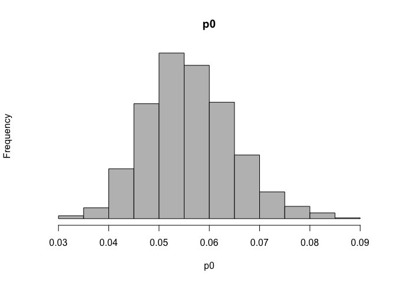
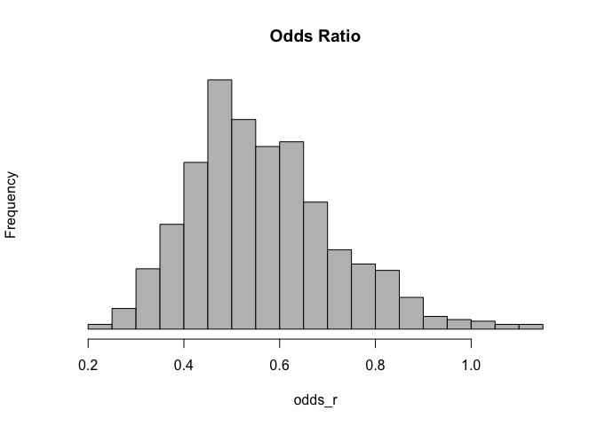
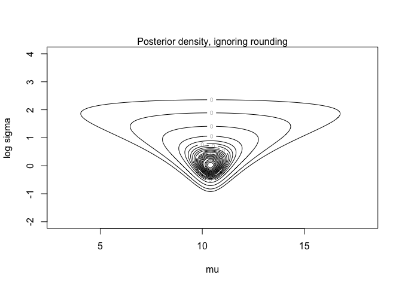

Bayes Statistics HW3
1
1-(a) Write the marginal posterior distribution for \(\alpha\)
Lets denote \(p(\theta)\) as \(Dirichlet(a_1,..,a_n)\).
Then posterior distribution is \(p(\theta|y) = Dirichlet(y_1+a_1,..,y_n+a_n\).
By the properties of Dirichlet, marginal posterior dist of (\(\theta_1,\theta_2,1-\theta_1-\theta_2\)) is also Dirichlet : \(p(\theta_1,\theta_2|y) \propto \theta_1^{y_1+a_1-1}\theta_2^{y_2+a_2-1}(1-\theta_1-\theta_2)^{y_{rest}+a_{rest}-1}\), where \(y_{rest}=y_3+..y_J\), \(a_{rest}=a_3+..a_J\).
do a variable transformation to \((\alpha,\beta)=(\frac{\theta_1}{\theta_1+\theta_2},\theta_1+\theta_2)\).
Jacobian is \(|1/\beta|\),
$\(\propto Beta(\alpha|y_1+a_1,y_2+a_2)Beta(\beta|y_1+y_2+a_1+a_2,y+{rest}+a_{rest})\)$ Posterior density is separated by two factors for \(\alpha\) and \(\beta\), they are independent,
therefore \(\alpha|y \sim Beta(y_1+a_2,y_2+a_2)\).
(1-b) show that this distribution is identical to the posterior distribution for \(\alpha\) obtained by treating \(y_1\) as an observation from the binomial distribution with probability \(\alpha\) and sample size \(y_1+y_2\), ignoring the data \(y_3,...,j_J.\)
The \(Beta(y_1+a_1,y_2+a_2)\) posterior distribution also be derived from a \(Beta(a_1,a_2)\) prior dist and a binomial observation \(y_1\) with sample size \(y_1+y_2\).
2
Assume independent uniform prior distributions on the multinomial parameters.
Then the posteriors are independent multinomial :
$\((\pi_1,\pi_2,\pi_3)|y \sim Dirichlet(295,308,39)\)$ $\((\pi_1^*,\pi_2^*,\pi_3^*)|y \sim Dirichlet(289,333,20)\)$,
and \(\alpha_1=\frac{\pi_1}{\pi_1+\pi_2},\alpha_2=\frac{\pi_1^*}{\pi_1^*+\pi_2^*}\). From the properties of Dirichlet distribution,
\(\alpha_1|y \sim Beta(295,308)\) \(\alpha_2|y \sim Beta(289,333)\).
set.seed(2020311194)
alpha.1 <- rbeta(2000,295,308)
alpha.2 <- rbeta(2000,289,333)
diff <- alpha.2- alpha.1
hist(diff,xlab="alpha2-alpha1",yaxt="n", breaks = seq(-.15,.09,.01),cex=2)

print (mean(diff>0))
## [1] 0.191
This is histogram of 2000 draws from posterior. Based on histogram, posterior probability that there was a shift toward Bush is 19.4%.
If we use normal approximations for the dist of \(\alpha_1\) and \(\alpha_2\) with means and st.d computed from relevant beta dist, can get the same answer.
3
3-(a)
Data dist is \(p(y|\mu_c,\mu_t,\sigma_c,\sigma_t)= \prod_{i=1}^32N(y_{ci}|\mu_c,\sigma_c^2)\prod_{i=1}^{36}N(y_{ti}|\mu_t,\sigma_t^2)\).
\((\mu_c,\sigma_c)\) are independent of \((\mu_t,\sigma_t)\) in the posterior.
So in this model, we can analyze two separately.
The marginal posterior for \(\mu_c\) and \(\mu_t\) are :
$\(\mu_t|y \sim t_{35}(1.173,0.20^2/36)\)$.
3-(b)
mu.c <- 1.013 + (0.24/sqrt(32))*rt(1000,31)
mu.t <- 1.173 + (0.20/sqrt(36))*rt(1000,35)
dif <- mu.t - mu.c
hist (dif, xlab="mu_t - mu_c", yaxt="n",
breaks=seq(-.1,.4,.02), cex=2)

print (sort(dif)[c(25,976)])
## [1] 0.05868759 0.26396430
Based on histogram, 95% posterior interval for average treatment effect is [0.05,0.27]
4
4-(a),(b)
Set Uniform prior for our model's prior. In binomial model, Uniform can be noninformative prior.
Let Uniform prior(\(Beta(1/2,1/2)\)) as our prior.
Then \(p(p_0) \propto 1,\ p(p_1) \propto 1\),
\(p(p_0,p_1|n_i,y_i) \propto p(p_0,p_1)\prod_{i=1}^2f(y_i|p_0,p_1)\)
\(\propto p_0^{39}(1-p_0)^{674}p_1^{22}(1-p_1)^{680}\).
Two experiments are independent, they can dealt seperately.
\(p(p_0) \sim Beta(40,675)\)
\(p(p_1) \sim Beta(23,681)\)
set.seed(2020311194)
p0 <- rbeta(1000,40,675)
p1 <- rbeta(1000,22,680)
hist(p0, breaks=20, col='grey', yaxt='n',main="p0")

hist(p1, breaks=20, col='grey', yaxt='n',main="p1")

odds_r <- (p1/(1-p1))/(p0/(1-p0))
hist(odds_r,breaks=30,col='grey',yaxt='n',main='Odds Ratio')

4-(c)
#Compare Jeffrey and Uniform prior
set.seed(2020311194)
p0 <- rbeta(1000,39.5,674.5)
p1 <- rbeta(1000,21.5,679.5)
odds_r1 <- (p1/(1-p1))/(p0/(1-p0))
mean(odds_r) ; mean(odds_r1)
## [1] 0.564724
## [1] 0.559396
var(odds_r) ; var(odds_r1)
## [1] 0.02306329
## [1] 0.0235932
quantile(odds_r,c(0.25,0.5,0.75,0.99)) ; quantile(odds_r1,c(0.25,0.5,0.75,0.99))
## 25% 50% 75% 99%
## 0.4557233 0.5458081 0.6511201 1.0087703
## 25% 50% 75% 99%
## 0.4500328 0.5366413 0.6471813 1.0028043
Comparing with Jeffrey's prior and my choice, difference is small.
5
5-(a)
\(p(\sigma^2|y) \sim Inv-\chi^2(n-1,s^2),\ p(\mu|\sigma^2,y) \sim N(\bar{y},\sigma^2/n)\) with n=5, \(\bar{y}\)=10.4, \(s^2\) = 1.3.
5-(b)
5-(c)
post.a <- function(mu,sd,y){
ldens <- 0
for (i in 1:length(y)) ldens <- ldens +
log(dnorm(y[i],mu,sd))
ldens}
post.b <- function(mu,sd,y){
ldens <- 0
for (i in 1:length(y)) ldens <- ldens +
log(pnorm(y[i]+0.5,mu,sd) - pnorm(y[i]-0.5,mu,sd))
ldens}
summ <- function(x){c(mean(x),sqrt(var(x)),
quantile(x, c(.025,.25,.5,.75,.975)))}
nsim <- 2000
y <- c(10,10,12,11,9)
n <- length(y)
ybar <- mean(y)
s2 <- sum((y-mean(y))^2)/(n-1)
mugrid <- seq(3,18,length=200)
logsdgrid <- seq(-2,4,length=200)
contours <- c(.0001,.001,.01,seq(.05,.95,.05))
logdens <- outer (mugrid, exp(logsdgrid), post.a, y)
dens <- exp(logdens - max(logdens))
contour (mugrid, logsdgrid, dens, levels=contours,
xlab="mu", ylab="log sigma", label=0, cex=2)
mtext ("Posterior density, ignoring rounding", 3)

sd <- sqrt((n-1)*s2/rchisq(nsim,4))
mu <- rnorm(nsim,ybar,sd/sqrt(n))
print (rbind (summ(mu),summ(sd)))
## 2.5% 25% 50% 75% 97.5%
## [1,] 10.384610 0.8058220 9.0456124 10.0022985 10.384453 10.770302 11.779308
## [2,] 1.439714 0.8063883 0.6947574 0.9888535 1.239987 1.640318 3.426055
logdens <- outer (mugrid, exp(logsdgrid), post.b, y)
dens <- exp(logdens - max(logdens))
contour (mugrid, logsdgrid, dens, levels=contours,
xlab="mu", ylab="log sigma", labex=0, cex=2)
## Warning in plot.window(xlim, ylim, ...): "labex" is not a graphical parameter
## Warning in title(...): "labex" is not a graphical parameter
## Warning in axis(side = side, at = at, labels = labels, ...): "labex" is not a
## graphical parameter
## Warning in axis(side = side, at = at, labels = labels, ...): "labex" is not a
## graphical parameter
## Warning in box(...): "labex" is not a graphical parameter
mtext ("Posterior density, accounting for rounding",
cex=2, 3)

dens.mu <- apply(dens,1,sum)
muindex <- sample (1:length(mugrid), nsim, replace=T,
prob=dens.mu)
mu <- mugrid[muindex]
sd <- rep (NA,nsim)
for (i in (1:nsim)) sd[i] <- exp (sample
(logsdgrid, 1, prob=dens[muindex[i],]))
print (rbind (summ(mu),summ(sd)))
## 2.5% 25% 50% 75% 97.5%
## [1,] 10.3702 0.6956568 8.8793970 10.0100503 10.386935 10.763819 11.668342
## [2,] 1.3473 0.7143081 0.5929691 0.9043828 1.186318 1.556144 3.208582
5-(d)
z <- matrix (NA, nsim, length(y))
for (i in 1:length(y)){
lower <- pnorm (y[i]-.5, mu, sd)
upper <- pnorm (y[i]+.5, mu, sd)
z[,i] <- qnorm (lower + runif(nsim)*(upper-lower), mu, sd)}
mean ((z[,1]-z[,2])^2)
## [1] 0.1582345
7
Poisson's parameter is relative with frequency of some event. We are given that total number of bicycles and others is \(b+v\). The likelihood we are trying to find is \(p(b|b+v)\).
Using Bayes' Rule, we can derive likelihood.
Sum of Pois dist is also Pois dist, then we can get that denominator.
This is a binomial distribution with \(b+v\) trials and prop \(\frac{\theta_b}{\theta_b+\theta_v}\).
9
$$ \propto \sigma^{-1}(\sigma^2)^{-((\nu_0+n)/2+1)}exp(-\frac{\nu_0\sigma^2_0+(n-1)s^2+\frac{n\kappa_0(\bar{y}-\mu_0)^2}{n_\kappa{_0}}+(n+\kappa_0)(\mu-\frac{\mu_0\kappa_0+n\bar{y}}{n+\kappa_0})^2}{2\sigma^2}) $$.
So, \(\mu,\sigma^2|y \sim N-Inv-\chi^2(\frac{\mu_0\kappa_0+n\bar{y}}{n+\kappa_0},\frac{\sigma^2_n}{n+\kappa_0};n+\nu_0,\sigma^2_n),\ where\ \sigma^2_n =\frac{\nu_0\sigma^2_0+(n-1)s^2+\frac{n\kappa_0(\bar{y}-\mu_0)^2}{n+\kappa_0}}{n+\nu_0}\).
10
\(p(\sigma^2_j|y) \propto (\sigma^2_j)^{-n/2-1/2}exp(-(n-1)s^2/2\sigma^2_j)\) for each j.
Thus \(p(1/\sigma^2_j|y) \propto (1/\sigma^2_j)^{n/2-3/2}exp(-(n-1)s^2/2\sigma^2_j)\),
which implies that \((n-1)s^2/\sigma^2_j\) has a \(\chi^2_{n-1}\) distribution.
Two independent \(\chi^2\) divided by each degree of freedom, it is F distribution.
By this fact, \(\frac{s_1^2/\sigma^2_1}{s_2^2/\sigma^2_2}\) has the \(F_{n_1-1,n_2-1}\) distribution.
Normal model with unknown mean and variance
library(ggplot2)
theme_set(theme_minimal())
library(grid)
library(gridExtra)
library(tidyr)
y <- c(93, 112, 122, 135, 122, 150, 118, 90, 124, 114)
n <- length(y)
s2 <- var(y)
my <- mean(y)
rsinvchisq <- function(n, nu, s2, ...) nu*s2 / rchisq(n , nu, ...)
dsinvchisq <- function(x, nu, s2){
exp(log(nu/2)*nu/2 - lgamma(nu/2) + log(s2)/2*nu - log(x)*(nu/2+1) - (nu*s2/2)/x)
}
#' Sample 1000 random numbers from p(sigma2|y)
ns <- 1000
sigma2 <- rsinvchisq(ns, n-1, s2)
#' Sample from p(mu|sigma2,y)
mu <- my + sqrt(sigma2/n)*rnorm(length(sigma2))
#' Create a variable sigma and
#' sample from predictive distribution p(ynew|y) for each draw of (mu, sigma)
sigma <- sqrt(sigma2)
ynew <- rnorm(ns, mu, sigma)
#' For mu, sigma and ynew compute the density in a grid
#' ranges for the grids
t1l <- c(90, 150)
t2l <- c(10, 60)
nl <- c(50, 185)
t1 <- seq(t1l[1], t1l[2], length.out = ns)
t2 <- seq(t2l[1], t2l[2], length.out = ns)
xynew <- seq(nl[1], nl[2], length.out = ns)
#' Compute the exact marginal density of mu
# multiplication by 1./sqrt(s2/n) is due to the transformation of
# variable z=(x-mean(y))/sqrt(s2/n), see BDA3 p. 21
pm <- dt((t1-my) / sqrt(s2/n), n-1) / sqrt(s2/n)
#' Estimate the marginal density using samples
#' and ad hoc Gaussian kernel approximation
pmk <- density(mu, adjust = 2, n = ns, from = t1l[1], to = t1l[2])$y
#' Compute the exact marginal density of sigma
# the multiplication by 2*t2 is due to the transformation of
# variable z=t2^2, see BDA3 p. 21
ps <- dsinvchisq(t2^2, n-1, s2) * 2*t2
#' Estimate the marginal density using samples
#' and ad hoc Gaussian kernel approximation
psk <- density(sigma, n = ns, from = t2l[1], to = t2l[2])$y
#' Compute the exact predictive density
# multiplication by 1./sqrt(s2/n) is due to the transformation of variable
# see BDA3 p. 21
p_new <- dt((xynew-my) / sqrt(s2*(1+1/n)), n-1) / sqrt(s2*(1+1/n))
#' Evaluate the joint density in a grid.
#' Note that the following is not normalized, but for plotting
#' contours it does not matter.
# Combine grid points into another data frame
# with all pairwise combinations
dfj <- data.frame(t1 = rep(t1, each = length(t2)),
t2 = rep(t2, length(t1)))
dfj$z <- dsinvchisq(dfj$t2^2, n-1, s2) * 2*dfj$t2 * dnorm(dfj$t1, my, dfj$t2/sqrt(n))
# breaks for plotting the contours
cl <- seq(1e-5, max(dfj$z), length.out = 6)
#' ### Demo 3.1 Visualise the joint and marginal densities
#' Visualise the joint density and marginal densities of the posterior
#' of normal distribution with unknown mean and variance.
#'
#' Create a plot of the marginal density of mu
dfm <- data.frame(t1, Exact = pm, Empirical = pmk) %>% gather(grp, p, -t1)
margmu <- ggplot(dfm) +
geom_line(aes(t1, p, color = grp)) +
coord_cartesian(xlim = t1l) +
labs(title = 'Marginal of mu', x = '', y = '') +
scale_y_continuous(breaks = NULL) +
theme(legend.background = element_blank(),
legend.position = c(0.75, 0.8),
legend.title = element_blank())
#' Create a plot of the marginal density of sigma
dfs <- data.frame(t2, Exact = ps, Empirical = psk) %>% gather(grp, p, -t2)
margsig <- ggplot(dfs) +
geom_line(aes(t2, p, color = grp)) +
coord_cartesian(xlim = t2l) +
coord_flip() +
labs(title = 'Marginal of sigma', x = '', y = '') +
scale_y_continuous(breaks = NULL) +
theme(legend.background = element_blank(),
legend.position = c(0.75, 0.8),
legend.title = element_blank())
## Coordinate system already present. Adding new coordinate system, which will replace the existing one.
#' Create a plot of the joint density
joint1labs <- c('Samples','Exact contour')
joint1 <- ggplot() +
geom_point(data = data.frame(mu,sigma), aes(mu, sigma, col = '1'), size = 0.1) +
geom_contour(data = dfj, aes(t1, t2, z = z, col = '2'), breaks = cl) +
coord_cartesian(xlim = t1l,ylim = t2l) +
labs(title = 'Joint posterior', x = '', y = '') +
scale_y_continuous(labels = NULL) +
scale_x_continuous(labels = NULL) +
scale_color_manual(values=c('blue', 'black'), labels = joint1labs) +
guides(color = guide_legend(nrow = 1, override.aes = list(
shape = c(16, NA), linetype = c(0, 1), size = c(2, 1)))) +
theme(legend.background = element_blank(),
legend.position = c(0.5, 0.9),
legend.title = element_blank())
#' Combine the plots
#+ blank, fig.show='hide'
# blank plot for combining the plots
bp <- grid.rect(gp = gpar(col = 'white'))

#+ combined
grid.arrange(joint1, margsig, margmu, bp, nrow = 2)

#' ### Demo 3.2 Visualise factored distribution
#' Visualise factored sampling and the corresponding
#' marginal and conditional densities.
#'
#' Create another plot of the joint posterior
# data frame for the conditional of mu and marginal of sigma
dfc <- data.frame(mu = t1, marg = rep(sigma[1], length(t1)),
cond = sigma[1] + dnorm(t1 ,my, sqrt(sigma2[1]/n)) * 100) %>%
gather(grp, p, marg, cond)
# legend labels for the following plot
joint2labs <- c('Exact contour plot', 'Sample from joint post.',
'Cond. distribution of mu', 'Sample from the marg. of sigma')
joint2 <- ggplot() +
geom_contour(data = dfj, aes(t1, t2, z = z, col = '1'), breaks = cl) +
geom_point(data = data.frame(m = mu[1], s = sigma[1]), aes(m , s, color = '2')) +
geom_line(data = dfc, aes(mu, p, color = grp), linetype = 'dashed') +
coord_cartesian(xlim = t1l,ylim = t2l) +
labs(title = 'Joint posterior', x = '', y = '') +
scale_x_continuous(labels = NULL) +
scale_color_manual(values=c('blue', 'darkgreen','darkgreen','black'), labels = joint2labs) +
guides(color = guide_legend(nrow = 2, override.aes = list(
shape = c(NA, 16, NA, NA), linetype = c(1, 0, 1, 1)))) +
theme(legend.background = element_blank(),
legend.position = c(0.5, 0.85),
legend.title = element_blank())
#' Create another plot of the marginal density of sigma
margsig2 <- ggplot(data = data.frame(t2, ps)) +
geom_line(aes(t2, ps), color = 'blue') +
coord_cartesian(xlim = t2l) +
coord_flip() +
labs(title = 'Marginal of sigma', x = '', y = '') +
scale_y_continuous(labels = NULL)
## Coordinate system already present. Adding new coordinate system, which will replace the existing one.
#' Combine the plots
grid.arrange(joint2, margsig2, ncol = 2)

#' ### Demo 3.3 Visualise the marginal distribution of mu
#' Visualise the marginal distribution of mu as a mixture of normals.
#'
#' Calculate conditional pdfs for each sample
condpdfs <- sapply(t1, function(x) dnorm(x, my, sqrt(sigma2/n)))
#' Create a plot of some of them
# data frame of 25 first samples
dfm25 <- data.frame(t1, t(condpdfs[1:25,])) %>% gather(grp, p, -t1)
condmu <- ggplot(data = dfm25) +
geom_line(aes(t1, p, group = grp), linetype = 'dashed') +
labs(title = 'Conditional distribution of mu for first 25 samples', y = '', x = '') +
scale_y_continuous(breaks = NULL)
#' create a plot of their mean
dfsam <- data.frame(t1, colMeans(condpdfs), pm) %>% gather(grp,p,-t1)
# labels
mulabs <- c('avg of sampled conds', 'exact marginal of mu')
meanmu <- ggplot(data = dfsam) +
geom_line(aes(t1, p, size = grp, color = grp)) +
labs(y = '', x = 'mu') +
scale_y_continuous(breaks = NULL) +
scale_size_manual(values = c(2, 0.8), labels = mulabs) +
scale_color_manual(values = c('orange', 'black'), labels = mulabs) +
theme(legend.position = c(0.8, 0.8),
legend.background = element_blank(),
legend.title = element_blank())
#' Combine the plots
grid.arrange(condmu, meanmu, ncol = 1)

#' ### Demo 3.4 Visualise posterior predictive distribution.
#' Visualise sampling from the posterior predictive distribution.
#' Calculate each predictive pdf with given mu and sigma
ynewdists <- sapply(xynew, function(x) dnorm(x, mu, sigma))
#' Create plot of the joint posterior with a draw
#' from the posterior predictive distribution, highlight the first sample
#' create a plot of the joint density
# data frame of dirst draw from sample the predictive along with the exact value for plotting
dfp <- data.frame(xynew, draw = ynewdists[1,], exact = p_new)
# data frame for plotting the samples
dfy <- data.frame(ynew, p = 0.02*max(ynewdists))
# legend labels
pred1labs <- c('Sample from the predictive distribution', 'Predictive distribution given the posterior sample')
pred2labs <- c('Samples from the predictive distribution', 'Exact predictive distribution')
joint3labs <- c('Samples', 'Exact contour')
joint3 <- ggplot() +
geom_point(data = data.frame(mu, sigma), aes(mu, sigma, col = '1'), size = 0.1) +
geom_contour(data = dfj, aes(t1, t2, z = z, col = '2'), breaks = cl) +
geom_point(data = data.frame(x = mu[1], y = sigma[1]), aes(x, y), color = 'red') +
coord_cartesian(xlim = t1l,ylim = t2l) +
labs(title = 'Joint posterior', x = 'mu', y = 'sigma') +
scale_color_manual(values=c('blue', 'black'), labels = joint3labs) +
guides(color = guide_legend(nrow = 1, override.aes = list(
shape = c(16, NA), linetype = c(0, 1), size = c(2, 1)))) +
theme(legend.background = element_blank(),
legend.position=c(0.5 ,0.9),
legend.title = element_blank())
#' Create a plot of the predicitive distribution and the respective sample
pred1 <- ggplot() +
geom_line(data = dfp, aes(xynew, draw, color = '2')) +
geom_point(data = dfy, aes(ynew[1], p, color = '1')) +
coord_cartesian(xlim = nl, ylim = c(0,0.04)) +
labs(title = 'Posterior predictive distribution', x = 'ytilde', y = '') +
scale_y_continuous(breaks = NULL) +
scale_color_manual(values = c('red', 'blue'), labels = pred1labs) +
guides(color = guide_legend(nrow = 2, override.aes = list(
linetype = c(0, 1), shape=c(16, NA), labels = pred1labs))) +
theme(legend.background = element_blank(),
legend.position = c(0.5 ,0.9),
legend.title = element_blank())
#' Create a plot for all ynews
pred2 <- ggplot() +
geom_line(data = dfp, aes(xynew, draw, color = '2')) +
geom_point(data = dfy, aes(ynew, p, color = '1'), alpha = 0.05) +
coord_cartesian(xlim = nl, ylim = c(0,0.04)) +
labs(x = 'ytilde', y = '') +
scale_y_continuous(breaks=NULL) +
scale_color_manual(values=c('darkgreen','blue'),labels=pred2labs) +
guides(color = guide_legend(nrow = 2, override.aes=list(
linetype = c(0, 1), shape = c(16, NA), alpha = c(1, 1) ,labels = pred2labs))) +
theme(legend.background = element_blank(),
legend.position = c(0.5 ,0.9),
legend.title = element_blank())
#' Combine the plots
grid.arrange(joint3, pred1, bp, pred2, nrow = 2)